Tu Hogar es un Ecosistema Digital: Protégelo
¿Sabías que hoy en día una bombilla inteligente tiene más potencia de cálculo que la computadora que llevó al hombre a la Luna? Tu hogar ya no es solo paredes y muebles, es una red invisible conectada al mundo entero.
Esta página nace porque la seguridad en el hogar inteligente no es un problema técnico, sino educativo. El eslabón más débil no es el aparato, sino el usuario que desconoce los riesgos básicos de dejar una configuración de fábrica o usar una contraseña débil.
¿Por qué debería importarte? Porque tus datos son la "llave" de tu vida financiera, personal y social. Una cámara mal configurada o un router sin contraseña son como dejar la puerta de tu casa abierta de par en par con un letrero que dice "Bienvenidos".
La Importancia de la Ciberhigiene
Así como nos lavamos las manos para evitar enfermedades sin necesidad de ser médicos, todos debemos aprender a "lavar" nuestra red doméstica sin necesidad de ser ingenieros.
¿Qué es la Ciberseguridad?
La ciberseguridad es el esfuerzo continuo para proteger a las personas, las organizaciones y los gobiernos de los ataques digitales mediante la protección de los sistemas y datos en red contra el uso o daño no autorizados.
Datos personales
Los datos personales son cualquier información que se puede utilizar para identificarlo y puede existir tanto fuera de línea como en línea.
Identidad fuera de linea: Su identidad fuera de línea es la persona de la vida real que presenta a diario en los lugares a los que asiste, por lo cual, los demás conocen detalles sobre su vida personal
Identidad en linea: Su identidad en línea es quién eres y como te presentas a los demás en línea, incluye el nombre o alías que utiliza para sus cuentas en línea, así como su identidad en redes sociales. Debe tener cuidado de limitar la cantidad de información que revela
¿Es peligrosa una filtración de datos?
Sí, es peligrosa y sucede a menudo, incluso en grandes empresas o instituciones, por ejemplo, en abril de 2026,
se dió a conocer la noticia sobre una filtración de aproximadamente 2,606 datos de alumnos del Instituto Tecnológico de Zacatepec (TecNM), filtración de la cuál, hasta la fecha, se desconoce la razón (al menos para el público).
Una filtración de datos personales como: nombre, edad, número de teléfono y dirección, es un tema delicados ya que las personas maliciosas pueden utilizar
dichos datos para extorsionarlos o llegar a escenarios más delicados.
Desafortunadamente en este caso no pudieron proteger los datos de los estudiantes, sin embargo, esta página web está diseñada para que todo el público en general tome conciencia
sobre la importancia de la ciberseguridad y aprendan a proteger sus datos en línea sin importar si no cuentan con conocimientos tecnológicos.
Definiciones Básicas
Antes de comenzar con los pasos, aclaremos algunas palabras clave que encontrarás usando analogías cotidianas:
IoT (Internet de las Cosas)
Son todos los objetos cotidianos de tu casa (focos, cerraduras, refrigeradores, cámaras) que se conectan a internet para obedecer órdenes a distancia.

Ciberhigiene
Es como "lavarse las manos digitalmente". Consiste en tener buenos hábitos diarios como cambiar claves y actualizar aplicaciones frecuentemente para prevenir "enfermedades" digitales.
Router
Es el director del "tráfico" o la "puerta de entrada principal" del internet a tu casa. Todo lo que entra y sale pasa por este aparato.
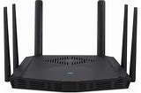
VPN (Túnel privado)
Imagina que cuando sales a internet, vas en un coche transparente y todos ven qué llevas. Una VPN es como un coche con vidrios polarizados que viaja por un túnel privado: nadie puede ver qué estás haciendo ni qué información envías.
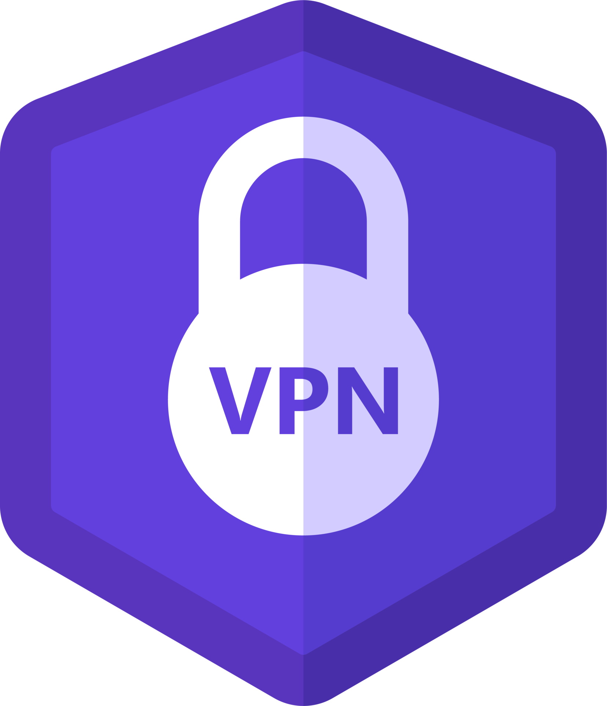
Cifrado (Encriptación)
Es como escribir un mensaje en un código secreto que solo tú y la persona que lo recibe pueden leer. Si alguien intercepta el mensaje en el camino, solo verá garabatos sin sentido.
Contraseña
Es la llave de tu puerta. Si es corta o fácil (como "123456"), es como dejar la llave puesta en la cerradura. Una buena contraseña es larga y mezcla letras, números y símbolos.
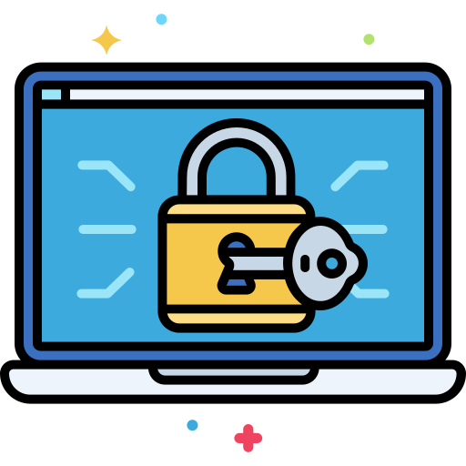
Doble Factor (2FA)
Imagina que para entrar a tu casa necesitas una llave normal y, además, un código numérico que llega a tu celular. Es pedir dos pruebas de identidad antes de dejarte entrar a una cuenta.
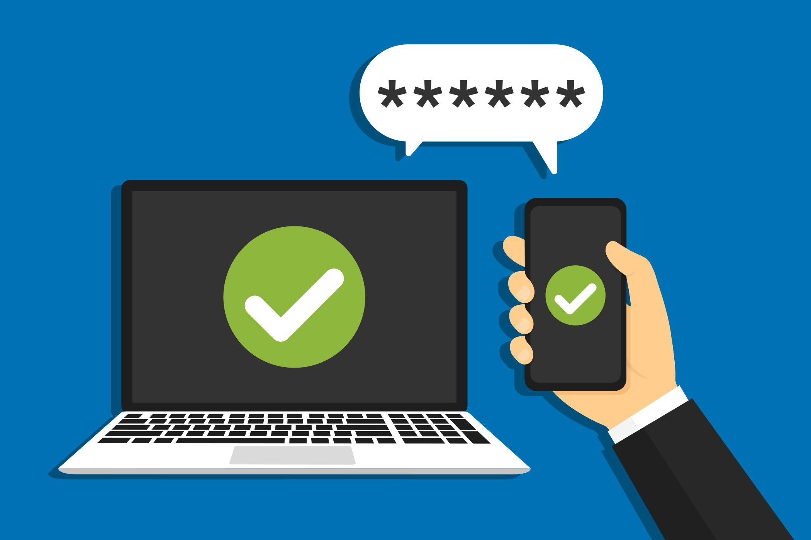
Gestor de contraseñas
Es como una caja fuerte donde guardas todas tus llaves. Solo tienes que recordar la clave de la caja fuerte, y ella se encarga de poner las llaves difíciles en cada cuenta por ti.
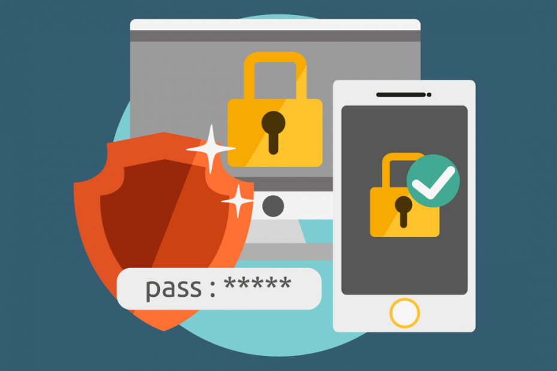
Phishing (Pesca de datos)
Son engaños psicológicos por mensajes, correos electrónicos, llamadas. El atacante se disfraza de una empresa de confianza para intentar que le entregues tus "llaves" digitales voluntariamente.
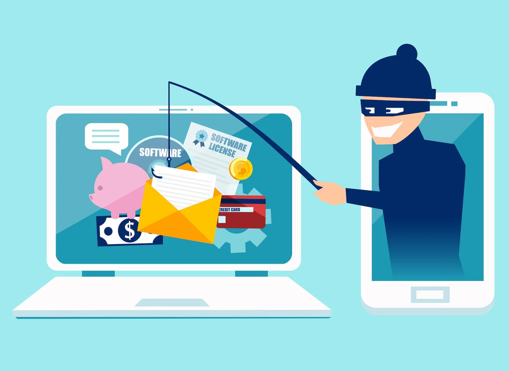
Malware (Programa malvado)
Es cualquier tipo de "virus" que entra a tu computadora o celular para espiarte, borrar tus fotos o alentarlo. Es como un parásito que se cuela cuando abres una puerta que no deberías.
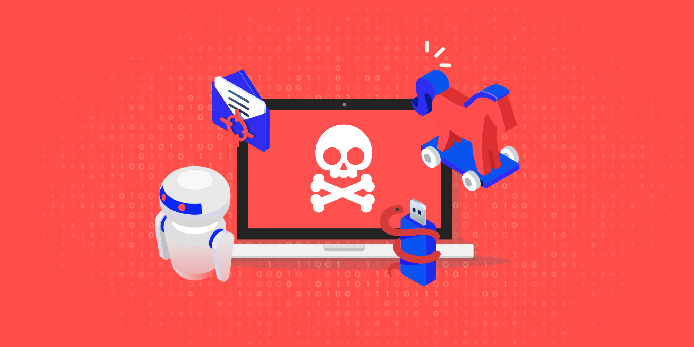
Ransomware (Secuestro de datos)
Es cuando un ladrón entra a tu casa, mete todos tus álbumes de fotos en una caja fuerte y te pide dinero para darte la combinación. Si no pagas, no recuperas tus archivos.
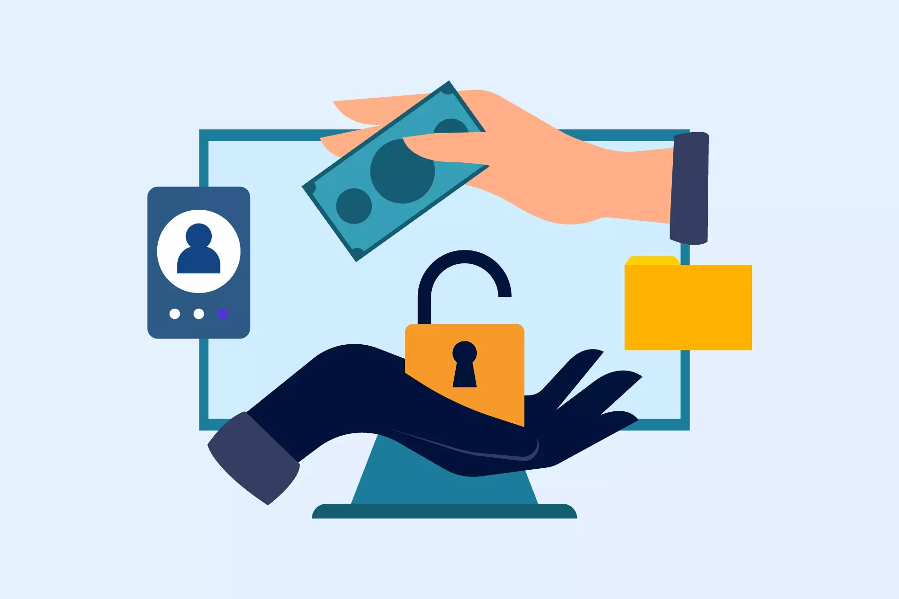
Antivirus
Es como tener un guardia de seguridad en la puerta que revisa a todos los que quieren entrar y saca a los que se ven sospechosos.
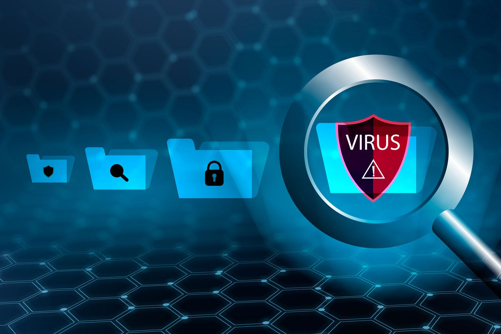
Actualizaciones de software
Los creadores de tus aplicaciones encuentran "agujeros" por donde pueden entrar ladrones. La actualización es el "parche" que tapa ese agujero. Si no actualizas, el agujero sigue abierto.

Firewall (Muro de fuego)
Es una reja que filtra quién puede entrar y salir de tu conexión a internet. Decide qué información es segura y cuál debe quedarse fuera.
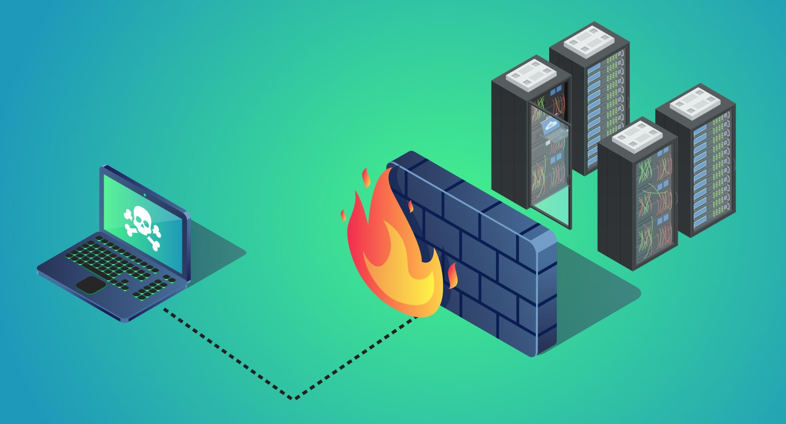
Hackers
Este grupo de atacantes irrumpe en sistemas informáticos o redes para obtener acceso. Dependiendo de la intención de su intrusión, pueden clasificarse como hackers de sombrero blanco, gris o negro.
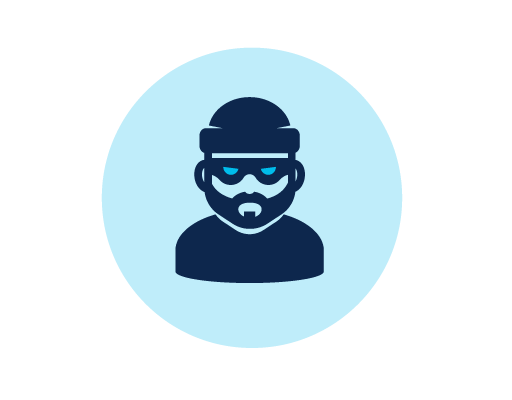
El Inventario de tu Hogar Conectado
No puedes proteger lo que no sabes que tienes. Muchos de nosotros compramos aparatos y olvidamos que están conectados para siempre. A esto se le llama "Superficie de Ataque": cada aparato es una ventana potencial para un intruso.
¿Por qué es peligroso olvidar dispositivos? Los dispositivos viejos o que no usamos suelen dejar de recibir actualizaciones de seguridad, convirtiéndose en "puertas oxidadas" fáciles de forzar.
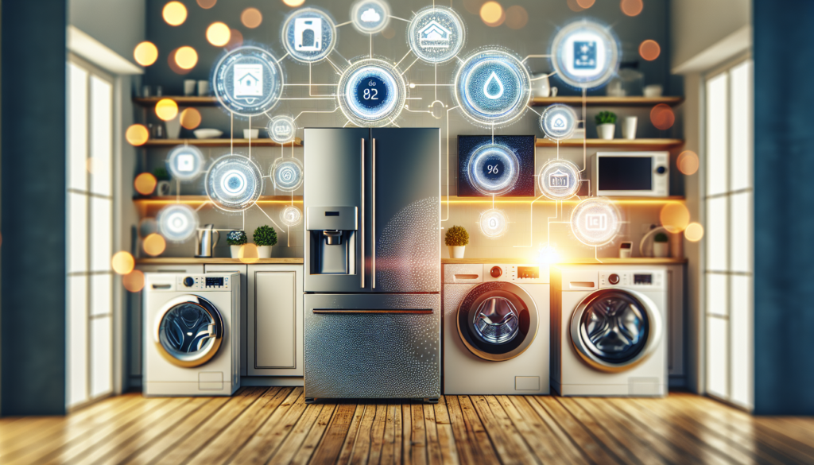
Acción Detallada: Camina por tu casa y anota cada cosa que use Wi-Fi. No olvides el aire acondicionado, la impresora o el reloj inteligente. Si tienes una app de tu proveedor de internet, entra y mira la lista de dispositivos conectados; te sorprenderá ver cuántos hay.
Fortalecer la Puerta Principal (Tu Router)
El router es el aparato más importante. Si alguien entra al router, tiene el control de toda tu casa. El mayor error es dejar el nombre de la red como viene de fábrica (ej. "Infinitum_A1B2") porque le dice al atacante exactamente qué modelo de router tienes.
Cambia el nombre (SSID): Ponle algo genérico que no revele quién eres ni dónde vives. No uses "Casa de los + tu apellido" o "Red de + tu nombre".
Desactiva el WPS: Es ese botoncito que permite conectar cosas sin clave. Es muy cómodo, pero es una falla de seguridad conocida que los atacantes usan para entrar en segundos.
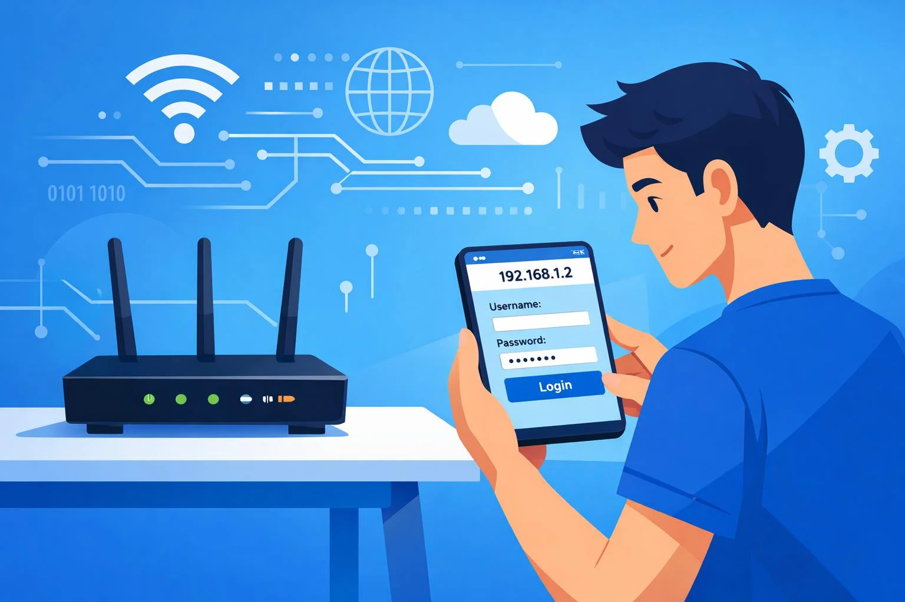
Acción Detallada: Entra a la configuración de tu router (suele ser una dirección como 192.168.1.1). Cambia la contraseña de acceso al panel (la que dice 'admin') y activa el cifrado WPA2 o WPA3. Es el escudo más fuerte disponible hoy.
Crear una "Zona de Invitados"
Imagina que tienes una casa de invitados separada de tu mansión principal. Si un invitado quema accidentalmente la casa de huéspedes, tu mansión está a salvo. Esto es lo que hace una Red de Invitados.
Muchos focos inteligentes o cámaras baratas tienen poca seguridad. Si los pones en la misma red que tu computadora donde haces banca en línea, un atacante que entre por el foco puede "saltar" a tu computadora.
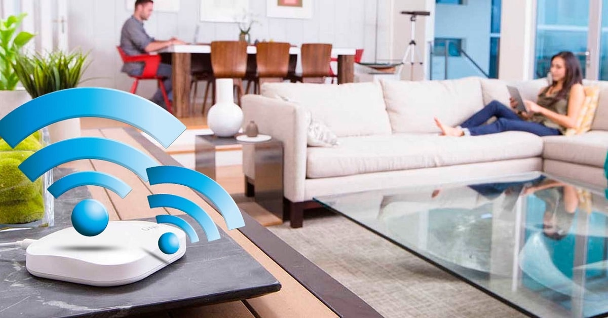
Acción Detallada: En la configuración de tu router, busca "Red de invitados" o "Guest Network". Actívala con una contraseña distinta y conecta ahí todos los dispositivos "tontos" como focos, enchufes y electrodomésticos.
Gestión de Contraseñas y Accesos
Usar la misma contraseña en todo es como tener una sola llave para tu casa, tu coche y tu caja fuerte. Si pierdes una, pierdes todo. Una buena contraseña no tiene que ser difícil de recordar, solo larga.
Usa Frases de Contraseña: En lugar de "P@ssw0rd123", usa algo como "210819ElGatoAzulSaltaAlto2024". Es mucho más difícil de adivinar para una computadora pero fácil para ti.
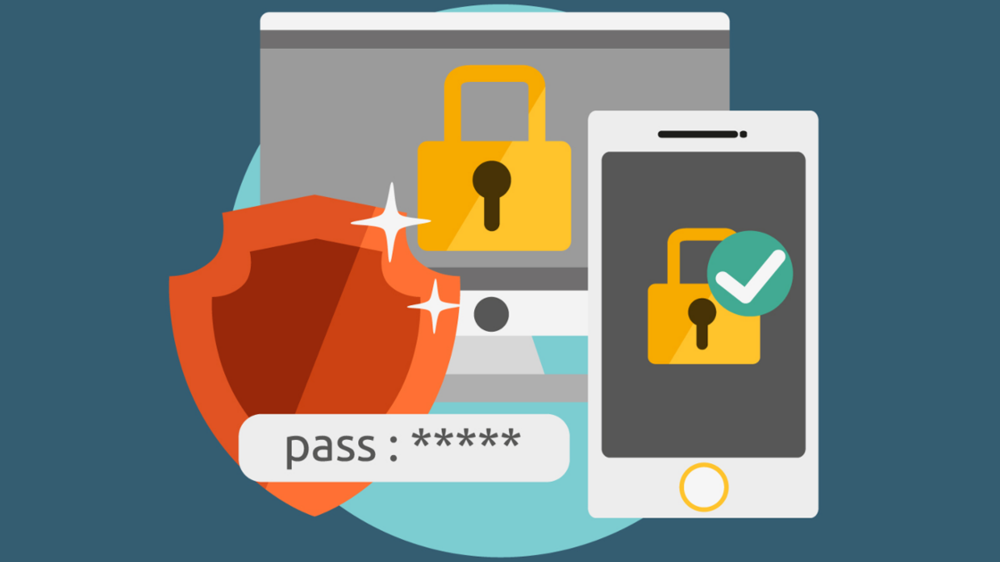
Acción Detallada: Activa la Autenticación de Dos Factores (2FA) en todo (WhatsApp, Facebook, Correo). Es la mejor defensa: aunque te roben la contraseña, no podrán entrar sin el código de tu celular.
Mantenimiento y Vigilancia Proactiva
La seguridad no es algo que se hace una vez y ya. Es como limpiar la casa. Los fabricantes de software encuentran "agujeros" constantemente y lanzan parches (actualizaciones). Si no actualizas, dejas el agujero abierto.
Apaga lo que no uses: Si tienes una cámara de seguridad adentro de tu casa, ¿necesitas que esté prendida mientras estás ahí? Si tu asistente de voz tiene un botón de silencio, úsalo cuando no lo necesites.
Acción Detallada: Una vez al mes, revisa que tu celular y computadora no tengan actualizaciones pendientes. Entra a la app de tus cámaras y focos y busca la opción "Actualizar Firmware". Es ponerle un candado nuevo a tu puerta.
Dispositivos en tu Hogar Inteligente
Cada uno de estos aparatos es una puerta a tu red. Haz clic para aprender cómo protegerlos específicamente:


Sensores de Humo y Gas
Te avisan al celular, pero podrían ser desactivados.
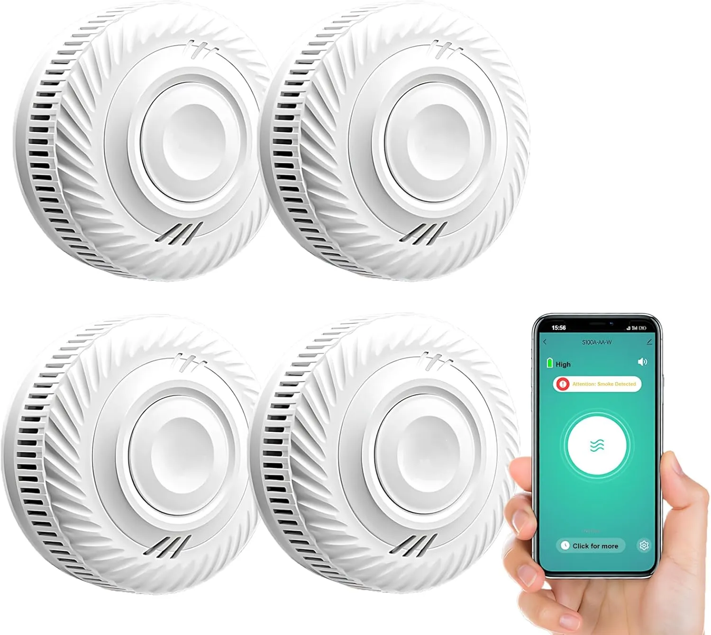
Revisar sensores →Persianas y Cortinas Smart
Revelan a qué hora te despiertas o duermes.
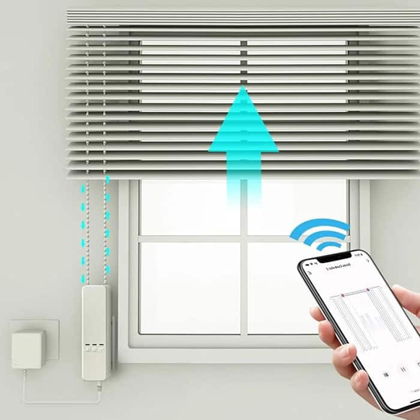
Proteger horarios →